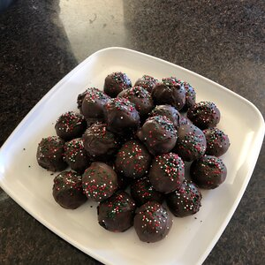

Prep: 30 mins Servings: 48
Cook: 1 hr 15 mins Yeild: 48 Servings
Total: 1 hr 45 mins
Mix cream cheese and cookie crumbs until well blended.
Shape into 48 (1-inch) balls. Freeze 10 min. Dip balls in melted chocolate; place in single layer in shallow waxed paper-lined pan.
Refrigerate 1 hour or until firm.